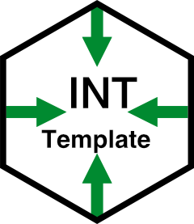

A ready-to-use template for statistical report creation.



Description
INT Template is a R Markdown template designed for creating statistical reports for the Fondazione IRCCS Istituto Nazionale dei Tumori. The package was developed using the indiedown package, and the output format is PDF using the xelatex engine.
Installation
You can install the latest version of TemplateLandS directly from GitHub using devtools:
# Install devtools if not already installed
install.packages("devtools")
# Install TemplateLandS
devtools::install_github("StheBerga/TemplateLandS")Quick Start
After installing the package, you will need to restart R to access the template. To create a new R Markdown file using TemplateLandS, navigate to File -> New File -> R Markdown. In the resulting window, choose “From Template,” and then select “LandS LaTeX Report {TemplateLandS}” from the options on the right.
For more information, please consult the vignette section.
Contributing
Contributions, bug reports, and feature suggestions are welcome! Please open an issue or submit a pull request on the repository.
License
TemplateLandS is distributed under the MIT license. See the LICENSE file for details.